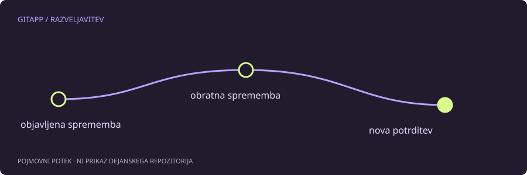

Zgodovina sodelovanja naj ostane razumljiva
Ko je napačna sprememba že na skupni veji, se želja po vrnitvi nazaj pogosto nanaša na učinek spremembe, ne na izbris vseh sledi. git revert je namenjen ustvarjanju nove potrditve, ki obrne učinek izbrane obstoječe potrditve. Prvotni zapis ostane v zgodovini.
Tak pristop ne zahteva, da bi vsi sodelavci prešli na prepisano zgodovino. Vendar ni samodejna povrnitev celotnega projekta v poljubno staro stanje. Če so poznejše potrditve odvisne od napačne spremembe, je treba razumeti tudi te odvisnosti.
Najprej izberi pravi cilj
Preveri stanje in kratko zgodovino, nato si oglej dejansko spremembo izbrane potrditve:
git status
git log --oneline -n 8
git show HEADV zadnjem ukazu HEAD predstavlja trenutno zadnjo potrditev. Za drug cilj potrebuješ njegov preverjen identifikator. Ne sklepaj, da je zadnja potrditev tudi tista, ki je uvedla napako. Sporočilo potrditve je koristno, dejanska razlika pa je pomembnejša.
Preprost primer
V učnem repozitoriju s čistim delovnim stanjem, kjer želiš obrniti navadno zadnjo potrditev z enim staršem, je primer:
git revert --no-edit HEADUkaz lahko ustvari novo potrditev z obratno spremembo. --no-edit se izogne odpiranju urejevalnika privzetega sporočila; ne pomeni, da preverjanje vsebine ni potrebno. Po izvedbi preglej rezultat in zaženi preizkuse, še preden ga pošlješ drugim.
Spor ni izguba celotnega projekta
Če spremembe ni mogoče uporabiti brez dvoumnosti, se lahko pojavi spor. git status pokaže stanje postopka. Ko razrešiš datoteke, jih pripraviš in nadaljuješ po navodilih za revert, ne z naključno izbranim zaključnim ukazom drugega postopka.
Če se odločiš postopek prekiniti, obstaja git revert --abort. Tudi pri prekinitvi moraš razumeti, katere spremembe so nastale med postopkom. Ne uporabljaj je kot splošnega gumba za vračanje, ko noben revert ni v teku.
Poseben primer združitve
Združitvena potrditev ima več staršev. Za njeno razveljavljanje moraš določiti ustrezno glavno stran, posledice pa lahko vplivajo na prihodnja združevanja. Zato splošni pomočnik ne sestavi samodejnega ukaza za tak cilj.
Merilo uspeha
Preveri, da je stara potrditev še vidna, da obstaja nova obratna potrditev in da je vsebina projekta pričakovana. revert ne odstrani skrivnosti iz stare zgodovine in ni nadomestilo za preklic razkritega žetona. Vsak ukaz rešuje točno določen problem, ne vseh težav z isto spremembo.
Vir in obseg
Referenca: uradni priročnik za git-revert. Primeri so pripravljeni za učenje in niso opis posega v dejanski projekt. Preberi način preverjanja.